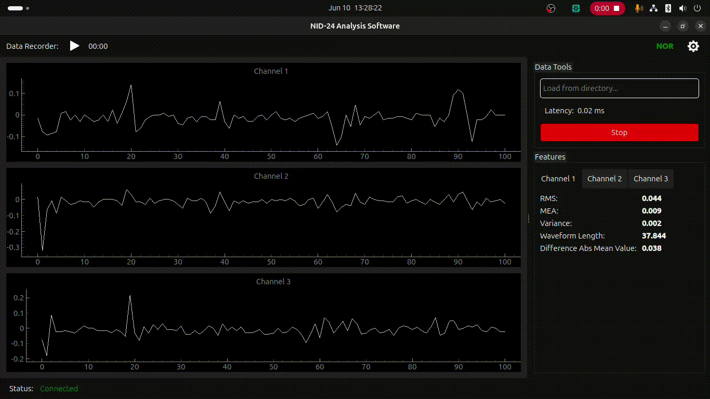

Introduction

Analysis Software
Analysis software allows you to observe sEMG signals in real-time. You can create your own datasets using the utility provided. The software is based on modular components allowing you to modify codebase easily. This development pattern allows fault-tolerant system.
Features
- Visualise signals in real-time.
- Create your own datasets.
- Record observations.
- Plug and Play software.
- Modular and fault tolerant architecture.
- Observe signal features change in real time.
Supported Platforms
Development Stack


Installation
Installation is simple and straightforward follow the steps below to install the application.
- Clone the repository
- Enter into the cloned directory.
Info
Please install Python3 before continuing.
- Create a virtualenv and install requirements.
- Run application
Info
The application requires to interact with rfcomm utility of Linux system. Thus, root permissions must be provided in the way above.
Troubleshooting
1. Controller Board cannot connect to PC
The application requires rfcomm utility to enable devices to connect. However, if you have Bluez ≥ 5.4 this will not work because newer version of Bluez have dropped support for rfcomm. However, rfcomm is very stable and completely satisfies the requirements of analysis software.
To fix this, run bluetooth service in compatibility mode
- Open the bluetooth service file (for systemd)
- Locate the following line
[Service]
Type=dbus
BusName=org.bluez
ExecStart=/usr/libexec/bluetooth/bluetoothd # this one
NotifyAccess=main
#WatchdogSec=10
Restart=on-failure
CapabilityBoundingSet=CAP_NET_ADMIN CAP_NET_BIND_SERVICE
LimitNPROC=1
- Add compatibility flag
[Service]
Type=dbus
BusName=org.bluez
ExecStart=/usr/libexec/bluetooth/bluetoothd --compat # like this
NotifyAccess=main
#WatchdogSec=10
Restart=on-failure
CapabilityBoundingSet=CAP_NET_ADMIN CAP_NET_BIND_SERVICE
LimitNPROC=1
- Restart bluetooth service and daemon